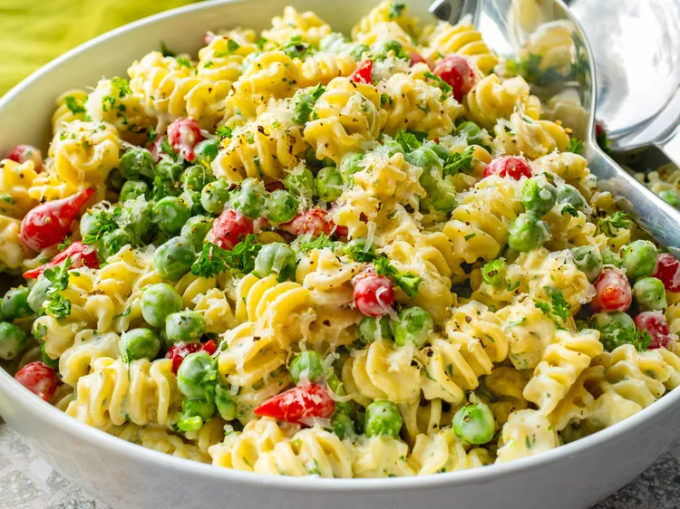

Salade de pâtes César crémeuse au citron
Pages d'accueil

Description
Cette salade de pâtes César crémeuse au citron associe petits pois, poivrons Sweetie Drop,
persil frais et parmesan dans une vinaigrette César citronnée et rafraîchissante.
Fraîche et facile à préparer, c'est une salade de pâtes estivale idéale pour
les pique-niques, les repas partagés, les barbecues ou pour préparer ses repas à l'avance.
Ingrédient
Sauce César au citron
- 1/2 tasse de mayonnaise
- 1/4 de tasse de yaourt grec nature ou de yaourt grec riche en protéines
- 2 cuillères à soupe d'huile d'olive extra vierge
- 1 gros citron, pressé
- 2 cuillères à café de zeste de citron
- 2 cuillères à café de moutarde de Dijon
- 1 cuillère à café de sauce Worcestershire
- 1 gousse d'ail, finement râpée
- 1/4 tasse de parmesan finement râpé
- 1 filet d'anchois écrasé, ou 1 cuillère à café de pâte d'anchois, ou plus selon votre goût
- sel et poivre noir fraîchement moulu au goût
Salade
- 1 livre de pâtes courtes , telles que des radiateurs, des coquilles, des gemelli, des fusilli ou des farfalle
- 1 tasse et demie de petits pois surgelés , décongelés
- 3/4 tasse de parmesan râpé , divisée
- 1/2 tasse de poivrons Sweety Drop
- 2 cuillères à soupe de persil frais finement haché (facultatif)
- poivre noir fraîchement moulu